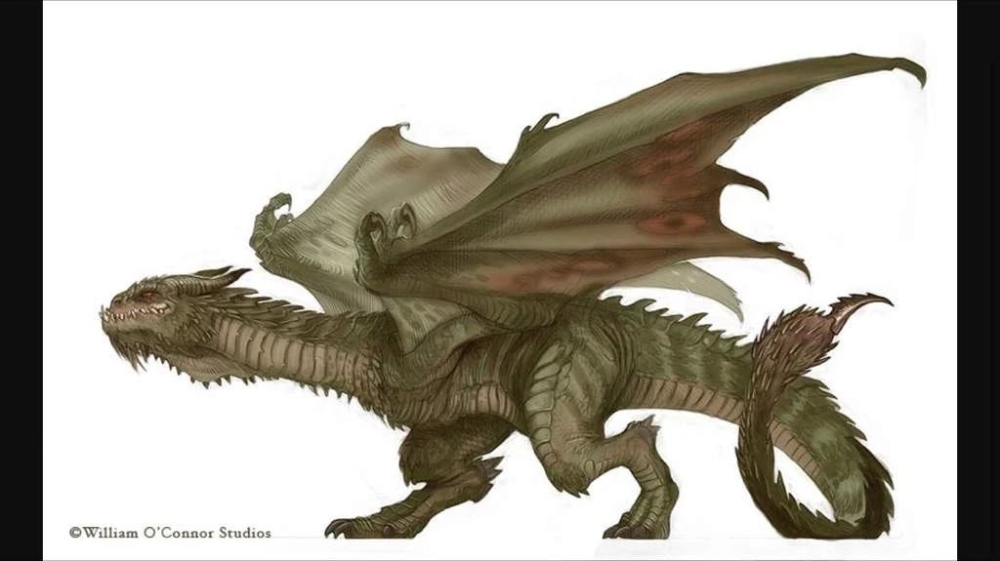
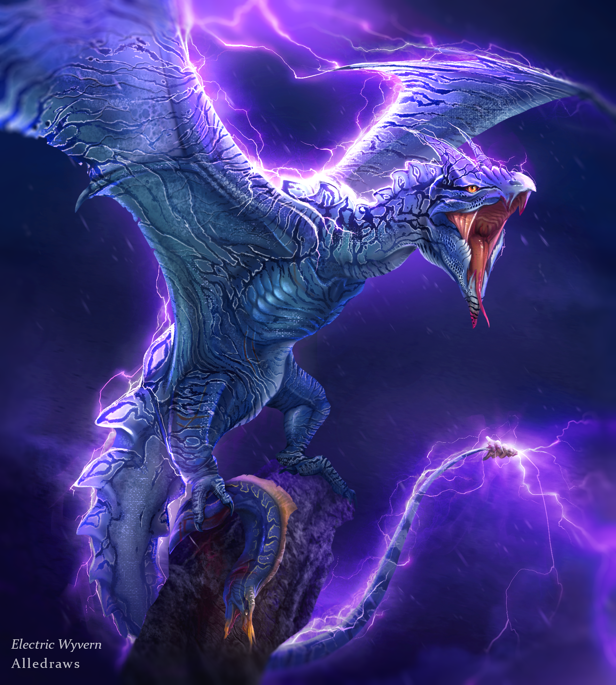

Les Wyverns sont une des race les plus puissante d'entre les dragon. réputer pour leur stabiliter d'attace dans les air et sur le sol, le wyvern est consider comme un adversaire pussait a affronter en tout situation. cette éspéce est comme un jeu entre un amphithere et un drake il n'est pas puissant dans les aire ni aussi vorace sur la terre que c'est contrepartie, mais il ce centre dans un bon millieu entre les duex éspece. Sa vitesse et agiliter de vole luis permet d'attacer confortablement ses proix avec ses membre, et les grif accrocher a ses aile luis serve d'un bon remplacement pour ces aile. en terme d'abiliter physique et vitesse, le wyvern n'est pas facile a battre.ses pourqoi pour le battre facilement, il faut se basser sur leur temp de réaction pour un changement de terrain. a chaque fois qu'un wyvern décole de la terre ou attérie, il levra ses aile aussi haut qu'il pourra faire la maneuvre confortablement et laisser de l'espace a ces jambe de dériere, ou meme vous attacer avec ceux ci. pendant ses moment, consacrer tout votre arsenal a couper aile. Mais gare a vous, contrairement aux autre dragon, les wyvern auront toujour une utiliter pour leur aile si vous coouper juste le tissu de ceux ci. il faus absolument couper l'entierter ou une partie d'un membre qui attache l'aile au reste de son corp.

Les Wyverns sont un race qui vive aime vivre en groupe. leur nombre peus varier de 6 a 20, mais l'aspect crucial est que si vous attaquer un Wyvern, il en a surement quelque un a proche distance. Meme si il aime vivre en communauter, leur groupe est dominer par la loi du plus fort, et souvent, le titre de "Chef" dans le groupe est donner au Wyvern le plus fort physiquement. Ce qui veus dire que les qui c'était plus apte au vole que la force physique s'était toujourd au bas de l'échelle hirachalle et était meme parfoit chaser de leur clan. contrairement a eu, les "chef" de clan devien de plus en plus gros et imposant, ce qui baise ses abiliter de vole mais monte fortement sa puissance physique et la durter de ses écailes. Ses Wyvern chef sont trés vicieux et demande un respect indénouable de leur sujet, qui est pourqoi certain Wyverns d'écide de quitter leur clan pour vivre en paix tout seule. aprés avoir passer asser de temp sur terre entrain de devenir plus puissant, les Chef Wyvern devient des Wyvern ancient qui sont des écailes rocheus et l'habiliter de controler la terre sous leur pier, a l'ancontre d'etre encord plus leng dans les aire.

Le moyen que les Wyvern gagnent leur pouvoir magique n'est pas trés unique en terme de concept, mais l'aspect sociale de celui si est contrairement trés unique. Les Wyvern gagnent souvent leur habiliter magique en habitant prés d'une source naturele intense, comme un volcan, l'océan, ou un endroit trés elever. mais les wyvern sont de type trés sédentaire, surement pour graviter autour de leur chef plus leng. allor si le Groupe de Wyvern n'est pas née proche d'une source naturelle, il est trés rare qu'il en encontre une source naturele naturelement. C'est pourquoi quand un Wyvern se fait chaser ou se sépare dee luis meme de son groupe, il est plus probable qu'il encontre une source naturele en explorant par luis meme. il est encore plus probable que ceux plus habile a voler recoivent le pouvoir de l'électriciter, aprés avoir voler souvent proche d'une tempete asser forte. Ce qui est pourquoi ses un des pouvoir les plus vue chez les wyverns. Les wyvern électrique devinene deux fois plus rapide d'opéravent et peuvent charger leur corp d'électriciter pour la lancer a leur énemie, allor fesais trés attetion quand vous les confrontais. il est meilleur pour vous de les ramener a la terre avant de les affronter pour vous donner un meilleur chance de succées car contrairement a leur d'autre de leur contre partie, les wyvern électrique sont trés faible physiquement.